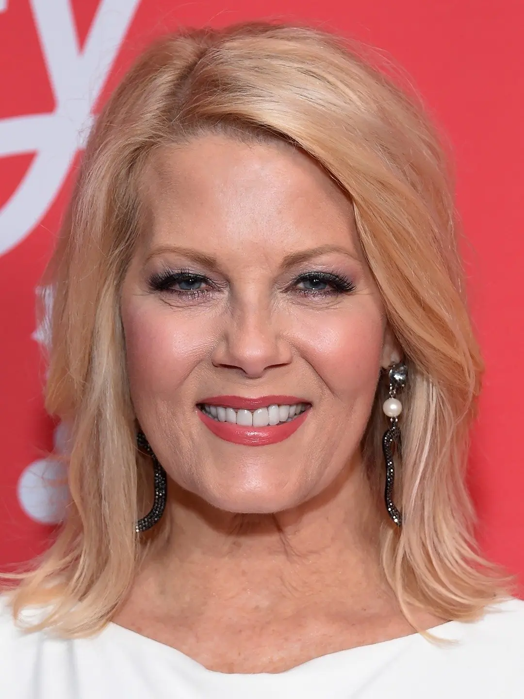

A Perfect Ending 2012
Rebecca Westridge appears to have everything: wealth, a family and a carefully ordered life. But beneath that polished surface lies a private longing she has never been able to express. When she meets Paris, a high-priced escort with an artistic spirit, Rebecca begins a deeply personal journey toward desire, honesty and self-discovery.
A Perfect Ending (2012)
A Journey from a Perfect Life to Unexpected Love
Written and directed by Nicole Conn, A Perfect Ending follows Rebecca Westridge, a wealthy socialite whose life looks ideal from the outside but feels emotionally incomplete. After confiding in friends, Rebecca is introduced to Paris, a high-priced escort who is also an artist. What begins as an unconventional attempt to understand her own desires becomes a relationship that challenges Rebecca’s assumptions about intimacy, identity and the life she has built. Balancing romantic drama with moments of humour and sensuality, the film explores the courage it can take to acknowledge what has been missing and to make room for a more authentic connection.
Cast



More Like This